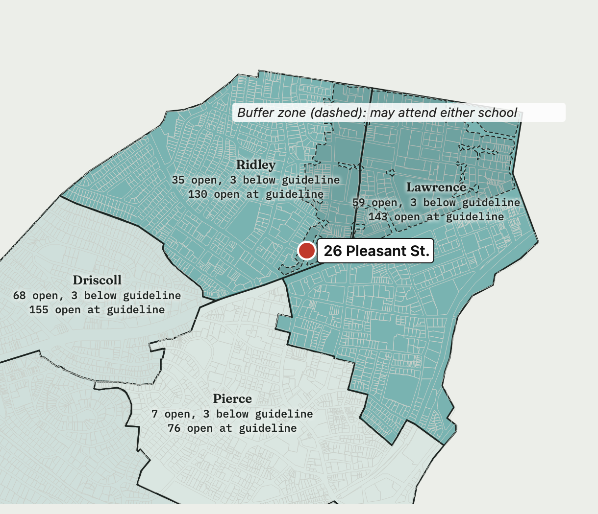
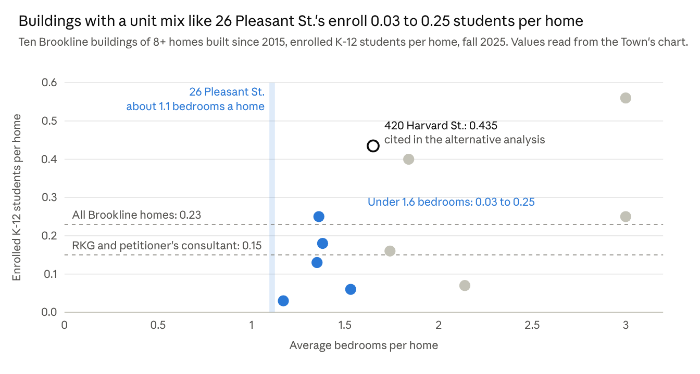
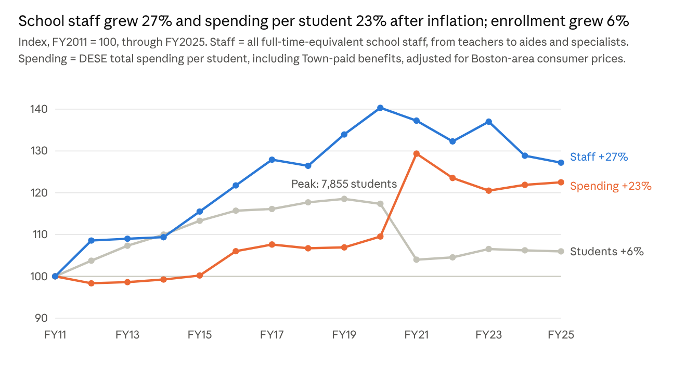

A new student who fills an open seat in an existing Brookline classroom costs the schools about $700 a year, or about $7,800 counting special education at the district average, not $15,600.
The Town's fiscal consultant, RKG, estimates that an added student costs the schools about $15,600 a year on average. That figure implies about one more staff member for every 8 added students. But Brookline's K-8 schools have about 440 open seats in the classes they already run, even with every class kept three students below the School Committee's guidelines, including about 115 at Ridley and Lawrence, the two schools serving 26 Pleasant St. At the guidelines, the figures are about 1,100 and 305. The high school, built for about 2,700 students according to its architects, has about 535 more. A student placed in one of those seats needs no new classroom teacher, only supplies and materials, plus special education where the student needs it.
| Measure | Per student a year | What it assumes |
|---|---|---|
| Fully loaded average | about $33,700 (FY2026-27) | Every Town and school cost, including pensions, health insurance, central staff and debt on existing buildings, grows with each student |
| RKG average variable cost | $15,572 (FY2025) | Student-facing staff grow in proportion to enrollment |
| With new staff (this site's forecast) | $16,975 (FY2027) | RKG's approach, plus health insurance and payroll taxes for the added staff |
| Filling an existing seat, with special education at the district average | about $7,760 (FY2027) | No new classroom staff; special education staff, services, tuition and transportation grow with enrollment |
| Filling an existing seat | about $670 (FY2027) | No new staff; only the supplies and materials each student uses |
The cost per student depends on how much added staff time new students need. Averaged over a group of new students, it runs from about $700 a year when they fill open seats in existing classes, to about $7,800 counting special education at the district average, to about $17,000 when the district needs new classroom staff. With today's open seats, the district wouldn't need new classroom teachers for them. Special education depends on each student's needs, not on open seats, so the middle figure counts it at the district's average rate (three tiers for the cost of an added student). This is an independent analysis of public data; the School Department and School Committee have not reviewed it.
An alternative analysis of Warrant Article 15 uses the fully loaded $33,680 per student and, in one scenario, 42 students, which would leave the building costing the Town money. "Answers to the main objections" explains why that analysis counts costs that do not change when a student fills an open seat.
Contents
RKG's $15,572 is an average of the school costs that vary with enrollment, not the cost of one more student.
RKG, the Town's fiscal consultant, worked with Town staff to sort about 1,700 budget lines into fixed and variable costs. It treated 67% of the FY2025 school budget, $109.6 million, as varying with enrollment. Divided by 7,039 students, that is $15,572 per student (ERSC Final Report, Appendix E, PDF p. 562). RKG's presentation slide says the 67% split was estimated from interviews with Town staff. RKG calls the result an "incremental" cost because it leaves out fixed costs such as central administration, but it is still an average: it spreads the variable budget evenly over every student.
Most of that variable share is staff. In FY2026 Brookline had about 5.5 students per school staff member, counting teachers, aides and specialists: 6,948 students (DESE enrollment profile) and 1,264 full-time-equivalent staff (DESE staffing data by FTE, "FTE Count" row). The School Department's FY2027 budget projects 6,923 students and 1,242 staff, about 5.6 per staff member (School Department table reprinted in the Advisory Committee write-up, p. 6). Salaries are seven-eighths of the school budget, so most of RKG's 67% variable share must be staff, about two-thirds of positions. At that share, each 8 added students bring about one more staff member (5.5 ÷ 0.67).
The $15,572 covers only the School Department's own budget. It does not include costs the Town pays on the schools' behalf: health insurance, pensions and retiree health care for school employees, debt service on school buildings, and shared services such as building maintenance (broken out under "Answers to the main objections" below). RKG counts benefits separately, for the Town as a whole, as $262 per home of "Other" costs (RKG peer review of 26 Pleasant St., p. 5). Of those Town-paid costs, only health insurance and payroll taxes would grow with new staff. Teachers' pensions are paid by the state's teachers' retirement system, most of the Town's pension payment covers obligations already earned, retiree health care covers people already retired, and debt service pays for buildings already built. Adding health insurance and payroll taxes, the model behind this article (school staffing and open seats) puts the cost of a student who needs new staff at $16,975 a year in FY2027 dollars: $12,192 for staff (about an eighth of a $100,109 position), $2,497 for non-salary costs and $2,287 for health insurance and payroll taxes.
Members of the Expenditures and Revenues Study Committee asked whether an extra student "at the margin does not cost the full load" (ERSC Final Report, Appendix D). When classes have room, it does not. The $15,572 is a reasonable long-run cost when the district must hire, which happens when classes are full, and today they are not.
Every K-8 school has open seats this fall: about 440 in classes already running with every class kept three students below the School Committee's class-size guidelines, and about 1,100 at the guidelines.
The School Department's October 1 enrollment report (School Committee, October 28, 2026) gives, for each school and grade, the number of students and the average class size, from which the number of sections follows. The Superintendent's Report of September 16, 2026 gives the School Committee's class-size guidelines: 22 students in K-2 and 25 in grades 3-8 (Driscoll 24 in grades 3-8, its building's design standard). Open seats are each grade's sections times its guideline, less the students enrolled. The guideline is a ceiling, so the table also counts open seats with every class kept three students below it (19 in K-2, 22 in grades 3-8), about the average class in 2015-16, when the schools had about 1,000 more K-8 students; a grade above that counts as full. The Advisory Committee's write-up calls these the School Committee's policy guidelines (p. 8, note 8), and the School Committee's FY2027 budget guidelines direct the district to "maintain K-8 class sizes within guidelines." State law sets no class-size cap for regular K-8 classes; its limits cover only special education groups (603 CMR 28.06(6)).
| School | Students, Oct. 1, 2026 | Sections | Open seats at guideline | Open seats, 3 below guideline |
|---|---|---|---|---|
| Baker | 647 | 34 | 173 | 72 |
| Ridley | 821 | 41 | 162 | 53 |
| Driscoll | 521 | 29 | 157 | 70 |
| Lawrence | 597 | 31 | 145 | 60 |
| Runkle | 462 | 25 | 136 | 63 |
| Lincoln | 475 | 25 | 123 | 52 |
| Hayes | 363 | 20 | 119 | 60 |
| Pierce | 550 | 31 | 82 | 10 |
| K-8 total | 4,436 | 236 | 1,097 | 440 |
| High school | 2,165 | about 535 | unknown |
Two other counts point the same way. The Advisory Committee's Schools Subcommittee write-up reprints the School Department's FY2027 class-size tables for each school (pp. 8-10). The write-up does not total the open seats; adding up each grade's sections times its guideline, less its projected enrollment, gives 945 open K-8 seats. Including each building's general classrooms instead of just today's sections, with the larger new Pierce, gives about 1,730 at the guidelines and about 960 at three below (school seats map).
The high school's design capacity after the 2022 expansion is about 2,700, against 2,165 students on October 1.
26 Pleasant St. is in the buffer zone shared by Ridley and Lawrence, which lets the district place a student at whichever school has room. Together they have about 115 open seats at three below the guidelines and about 305 at the guidelines.

The image shows the September 16 counts; the interactive map has the October 1 counts. Open seats in today's sections, counted two ways: with every class kept three students below the School Committee's class-size guidelines, and with every class filled to the guidelines. The guideline is a ceiling, so the first is the more realistic measure of room. The dashed area is the Ridley-Lawrence buffer zone, traced from the Town's August 2026 school district map.
The budget lines that grow with each student come to about $650 per student, or $670 in FY2027. With special education at the district average, a student filling an existing seat costs about $7,760.
The School Department's FY2026 budget closing summary (August 2026) lists each operating line. A student placed in an existing class adds to the first five lines below: the variable costs of each new student. Per-student figures divide the FY2026 budget by FY2026 enrollment, 6,948 students (DESE). That count includes preschool, which the budget also pays for.
| FY2026 budget line | Budget | Per student |
|---|---|---|
| General supplies | $1,718,691 | $247 |
| Online books, subscriptions and tools | $1,296,151 | $187 |
| Leased computers | $853,135 | $123 |
| Textbooks and print materials | $602,126 | $87 |
| Purchased computers | $50,800 | $7 |
| Lines that grow with each student | $4,520,903 | about $650 |
| Transportation | $5,247,618 | $755 |
| All other non-salary costs | $8,012,272 | $1,153 |
| All non-salary operating costs | $17,780,793 | about $2,560 |
Most of the rest of the non-salary budget follows particular students rather than seats. About $4.5 million of the $5.2 million transportation budget, 85%, carries 177 students, about 2.5% of enrollment, in special education, foster care or homelessness (the School Department's FY2026 special education transportation budget). Legal services, insurance claims and professional services do not grow with a typical added student.
Special education is different from a classroom seat: its staff, services, tuition and transportation grow with the number of students who need them. Brookline spent $6,665 per student on special education in FY2025, by the state's count (DESE, Direct Special Education Expenditures). Less federal grants and the state's Circuit Breaker reimbursement, plus benefits for the staff, that is $6,681, about $7,090 in FY2027. Added to the $670, a student who brings the district's average special education needs costs about $7,760. It assumes new students need special education at the district's average rate and mix: 18.6% of students had individualized education programs (IEPs) in 2024-25. The full calculation is on the site's schools page.
Recent Brookline buildings with a unit mix like 26 Pleasant St.'s enroll about 0.03 to 0.25 students per home, which points to about 12 to 22 students from its 96 homes.
The Town and School Department counted enrolled K-12 students in the ten buildings of 8 or more homes built in Brookline since 2015, excluding age-restricted and Housing Authority buildings (ERSC Final Report, Appendix E, PDF p. 567). The Town published them only as a chart; the values below are read from it, so each is approximate.

The Town's chart shows that students per home rise with bedrooms. 26 Pleasant St. would have 22 studios, 46 one-bedroom, 23 two-bedroom and 5 three-bedroom homes, according to the Town's consultant (RKG peer review, Table 1). Counting a studio as zero bedrooms, that averages 1.11 bedrooms a home: (22 × 0 + 46 × 1 + 23 × 2 + 5 × 3) ÷ 96. The Town's chart does not say how it counted studios; counting them as one bedroom gives 1.34, which still places 26 Pleasant St. among the buildings with the fewest students. The five Town buildings with fewer than 1.6 bedrooms a home enroll 0.03 to 0.25 students per home, about 0.13 on average.
For reference, Brookline as a whole has about 0.23 public school students per home: 6,601 K-12 students on October 1 ÷ 28,873 homes, the Census Bureau's American Community Survey count for 2024 that RKG cites (RKG peer review, p. 7). The alternative analysis counts 28,381 homes from the Assessors' FY2026 database; that also gives 0.23. The rate includes Brookline's single-family houses.
Annual school cost for 26 Pleasant St., from the fewest students and the lowest cost per student to the most and the highest:
| Students per home | Students | At $670 | At $7,760 | At $15,572 | At $33,680 |
|---|---|---|---|---|---|
| 0.13: Town buildings with a similar mix | 12 | $8,000 | $93,000 | $187,000 | $404,000 |
| 0.15: RKG and the petitioner's consultant | 14 | $9,000 | $109,000 | $218,000 | $472,000 |
| 0.21: all ten Town buildings | 20 | $13,000 | $155,000 | $311,000 | $674,000 |
| 0.23: all Brookline homes | 22 | $15,000 | $171,000 | $343,000 | $741,000 |
| 0.435: one building cited in the alternative analysis | 42 | $28,000 | $326,000 | $654,000 | $1,415,000 |
Costs per student: $670 is a student in an existing class, and $7,760 adds special education at the district average; $15,572 is RKG's cost when new staff are hired; $33,680 is the fully loaded average. Shaded blue: the combinations this analysis considers reasonable. Shaded gray: the fully loaded average, which counts costs that do not change with enrollment.
The lower numbers are the better estimate.
Families moving into Brookline's existing homes matter more to enrollment than new buildings do, but that flow has been steady, and births have fallen almost 40%.
Enrollment depends mostly on two things: how many children are born to Brookline residents, and how many families move into the roughly 29,000 existing homes. New buildings add a small amount on top. For open seats to fill, one of the first two would have to change.
Brookline also does not draw families the way suburban towns do. Lexington enrolls about two kindergartners for every birth to a resident, because families move there after having children. Brookline enrolls 0.93, close to its urban neighbors. Per family-sized home, Brookline has about the same number of school-age children as its peers; it has fewer such homes.
| Town | Kindergartners per birth | Homes that are family-sized | Children 5-17 per family-sized home | Children 5-17 per home |
|---|---|---|---|---|
| Lexington | 2.07 | 77% | 0.76 | 0.58 |
| Needham | 1.44 | 77% | 0.81 | 0.63 |
| Wellesley | 1.31 | 81% | 0.78 | 0.63 |
| Newton | 1.07 | 69% | 0.64 | 0.44 |
| Brookline | 0.93 | 43% | 0.71 | 0.31 |
| Arlington | 0.91 | 51% | 0.70 | 0.35 |
| Cambridge | 0.59 | 28% | 0.64 | 0.18 |
| Somerville | 0.52 | 37% | 0.35 | 0.13 |
Family-sized means 3 or more bedrooms or 6 or more rooms, as each town's data allows. Children 5-17 counts all children, including those in private school, so Brookline's 0.31 is higher than its 0.23 public school students per home. Sources: U.S. Census Bureau American Community Survey, 2020-2024 (data.census.gov); DESE enrollment; Massachusetts birth reports. Full table for 12 towns on the families page.
Over 14 years, school costs grew mainly because of inflation and more staff per student, not more students.

Enrollment ended the period about 400 students higher than it began. Staff were added while enrollment rose to its 2019 peak and only partly reduced when it fell, so students per staff member went from 6.7 in FY2011 to 5.6 in FY2025 (DESE staffing by FTE and enrollment profiles; earlier years by the year selector). Enrollment this fall is 6,889 including preschool, about 970 below the peak.
Spending per student, including benefits the Town pays, rose from $16,556 in FY2011 to $28,790 in FY2025 (DESE per-pupil expenditure report, total per pupil, each year by the year selector). After Boston-area inflation (BLS consumer price index), that is 23% more, close to the 20% rise in staff per student. The jump in FY2021 came when enrollment fell by about 900 students during the pandemic and spending did not. Enrollment swings of hundreds of students have moved the budget less than staffing decisions have, so 12 to 22 students in existing classes would not drive it either.
The higher figures count costs that do not change with one more student, and the open seats should last until at least about FY2033, even on the higher of two forecasts.
"Use the fully loaded cost, about $33,700 per student." The alternative analysis adds the FY2027 school budget, $144.5 million, to $89.5 million the Town spends on behalf of the schools (the FY2026 estimate in the FY2027 Financial Plan, p. 78), and divides by 6,948 students. The table shows which parts change when a student fills an existing seat.
| Part of the $33,680 | Total | Per student | Grows when a student fills an existing seat? |
|---|---|---|---|
| School Department budget, FY2027 | $144,533,296 | $20,802 | Only supplies and special education, about $670 to $7,760 |
| Benefits for school staff and retirees | $39,494,844 | $5,684 | No; only when staff are added |
| Debt service on school buildings | $34,382,581 | $4,949 | No; buildings already built |
| Town services for schools, mostly building maintenance | $15,599,118 | $2,245 | Little or none |
| Total | $234,009,838 | $33,680 | About $670 to $7,760 |
Benefits are pensions, health insurance, retiree health insurance, Medicare and workers' compensation. Town services also include IT, payroll, public works and police. The Financial Plan's rows sum to $1 more than its total because of rounding.
The fully loaded average is what the schools cost per student in total, not what one more student adds.
"Population growth will fill the empty seats." The projection of 79,442 residents by 2040, which the alternative analysis takes from the petitioner's consultant, comes from the UMass Donahue Institute's 2018 projections, which have been replaced. That series projected 65,693 residents for 2020; the Census counted 63,191. The current UMass projection is 64,167 in 2040, with fewer school-age children than today (see "What about families moving into existing homes?").
"Enrollment forecasts could be wrong." The School Department plans with Cropper-McKibben's 2023 study, which has K-12 enrollment rising to about 7,200 by FY2034 (7,400 with preschool) from new apartments, more births, turnover of older owners' homes and young families moving in (Cropper-McKibben, 2023). It assumes about as many new homes a year as Brookline has been building, but far more births: about 590 a year for 2020-25 and 620 for 2025-30, against about 465 a year counted for 2020-24, 443 in 2024 and 423 in 2025 (2025 Annual Town Report, p. 30). On its numbers, K-8 classes would reach three below the guidelines around FY2033, at Ridley and Lawrence as well as overall, and would stay under the guidelines through FY2034. NESDEC's forecast, which follows births, has K-12 enrollment falling to about 5,900 by FY2034 (the forecasts compared). This site's forecast, which updates NESDEC's with the births in the years since it was made, has K-8 enrollment about 500 lower by FY2031. On either forecast, the buildings have room for 26 Pleasant St.'s students through FY2034, the last year of both forecasts; on Cropper-McKibben's, the district would begin opening sections in spare classrooms, with new teachers, around FY2033. So far NESDEC's is the closer for K-8: it projected 4,436 students this fall, exactly the October 1 count, and Cropper-McKibben 4,588.
"A small increment still adds up." When a grade fills, the district opens a new section and adds staff. At the ratio implied by RKG's figure, about one staff member (counting teachers, aides and specialists) for every 8 added students, that is when the $15,572 applies, or about $17,000 with health insurance and payroll taxes. On the School Department's own forecast, classes stay three below the guidelines until about FY2033 and under the guidelines through FY2034. After that, if enrollment keeps rising, each added student costs about $15,600 to $17,000 a year. New classrooms, which the alternative analysis puts at $4 to $5 million each in recent school projects, are needed only once the buildings' spare classrooms are also full.
"One nearby building has 0.435 students per home." The alternative analysis cites 420 Harvard St., one of the three buildings the petitioner's consultant counted, as a test case: 10 students in its 23 homes. The building's approved plans show 3 studios, 6 one-bedrooms, 10 two-bedrooms and 4 three-bedrooms. That averages 1.65 bedrooms a home, and six in ten homes have two or three bedrooms. 26 Pleasant St. averages 1.11, and three in ten of its homes have two or three bedrooms. Buildings with a similar mix enroll 0.03 to 0.25 ("How many students new homes bring," above).
Town and School Department
State and federal
Analyses this document responds to
Further detail